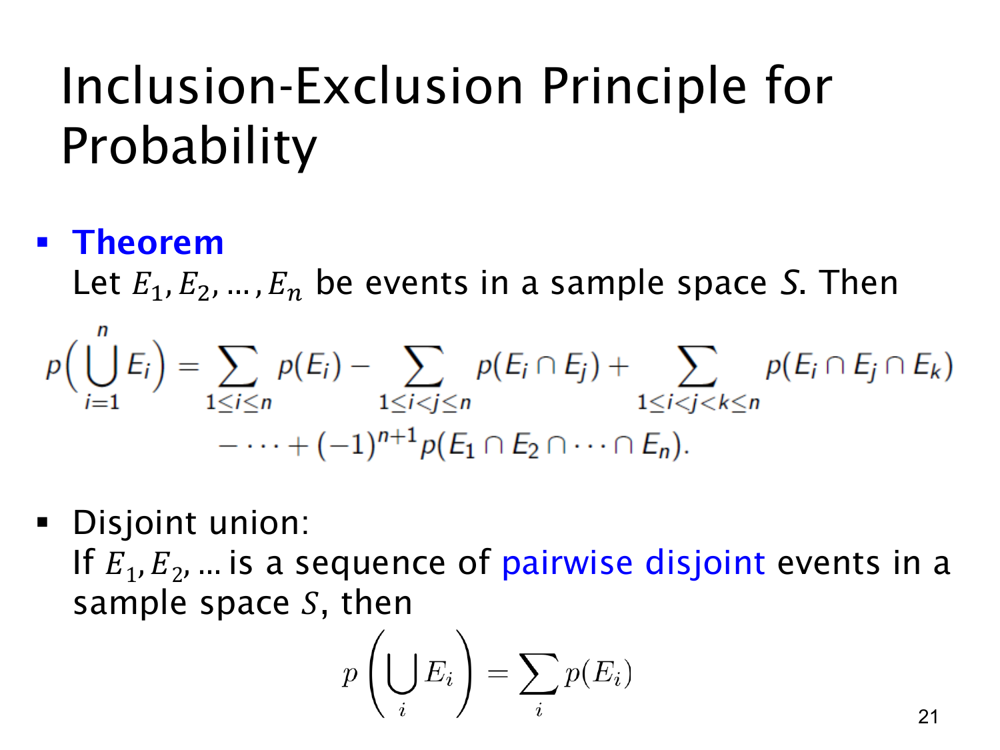

L1.9 · 第 21 页讲解原文
查看这一页课件

多个事件的容斥与互斥相加
两个事件的并集公式可以推广到 n 个事件。容斥原理（inclusion-exclusion principle）按交集涉及的事件数交替加减：
p(i=1⋃nEi)=i∑p(Ei)−i<j∑p(Ei∩Ej)+i<j<k∑p(Ei∩Ej∩Ek)−⋯+(−1)n+1p(E1∩⋯∩En).
每个单事件加一次，每个不同的两两交集减一次，每个不同的三重交集加一次。下标 i<j、i<j<k 确保每个组合只算一次。
三个事件时，完整式子是
p(E1∪E2∪E3)=p(E1)+p(E2)+p(E3)−p(E1∩E2)−p(E1∩E3)−p(E2∩E3)+p(E1∩E2∩E3).
三重交集中的结果先被加 3 次，又被减 3 次，所以必须再加 1 次。一般而言，一个属于 r 个事件的结果最终权重为 (1r)−(2r)+⋯+(−1)r+1(rr)=1。
页面下半部分是特殊情形：若事件两两互斥（pairwise disjoint），即任何不同两个事件交集都为空，则所有重叠项为 0，因而
p(i⋃Ei)=i∑p(Ei).
这个相加关系也适用于可数个两两互斥事件。比如骰子单点事件 {1},…,{6} 两两互斥，概率相加为 1。
“两两互斥”要求每一对不能同时发生；只知道全部事件的共同交集为空还不够。容斥不要求事件独立，互斥相加也不要求独立。